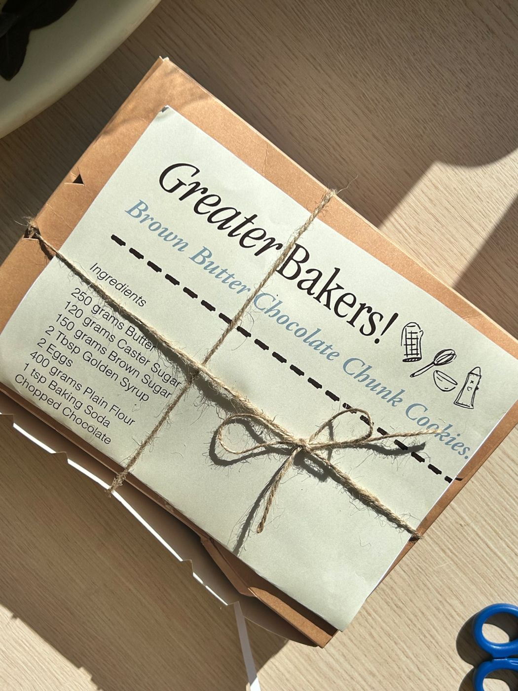
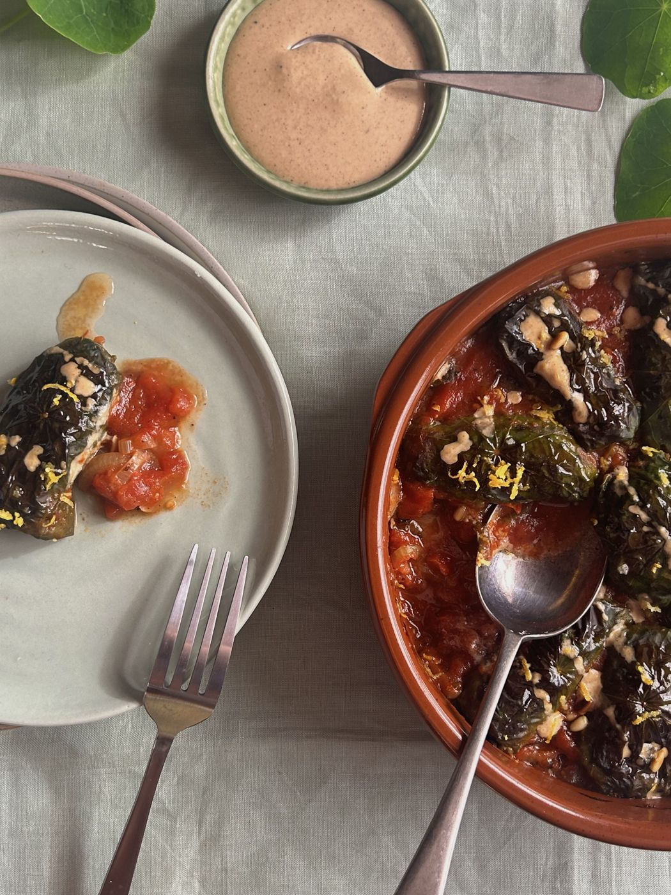
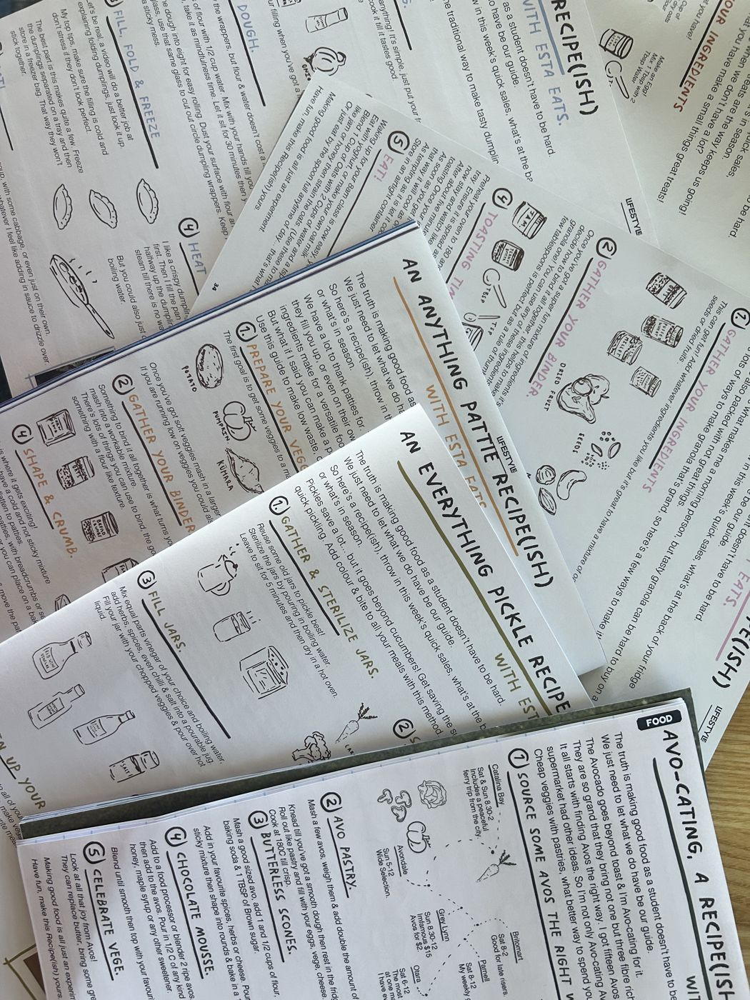
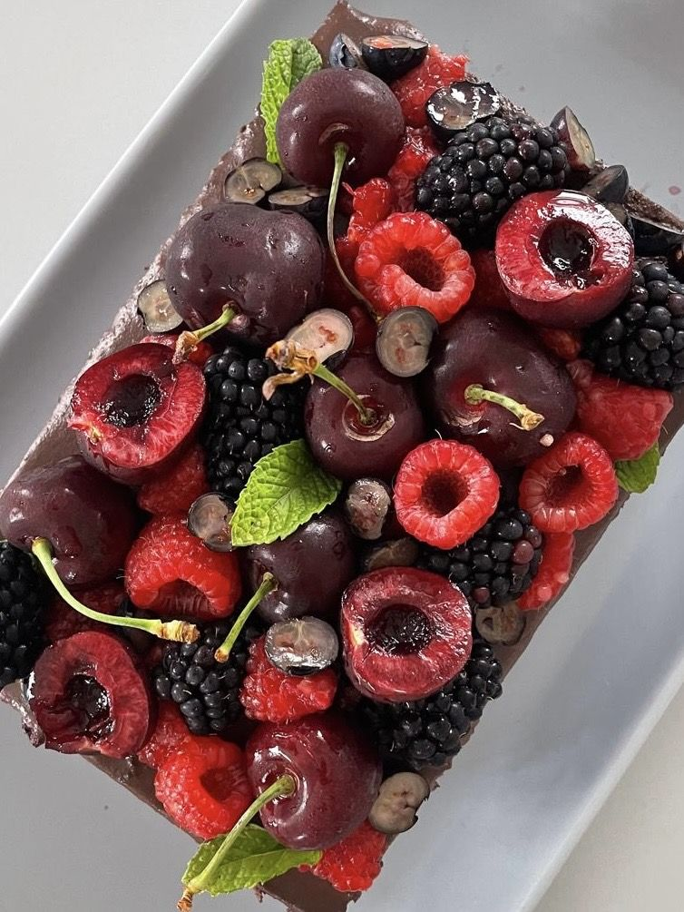
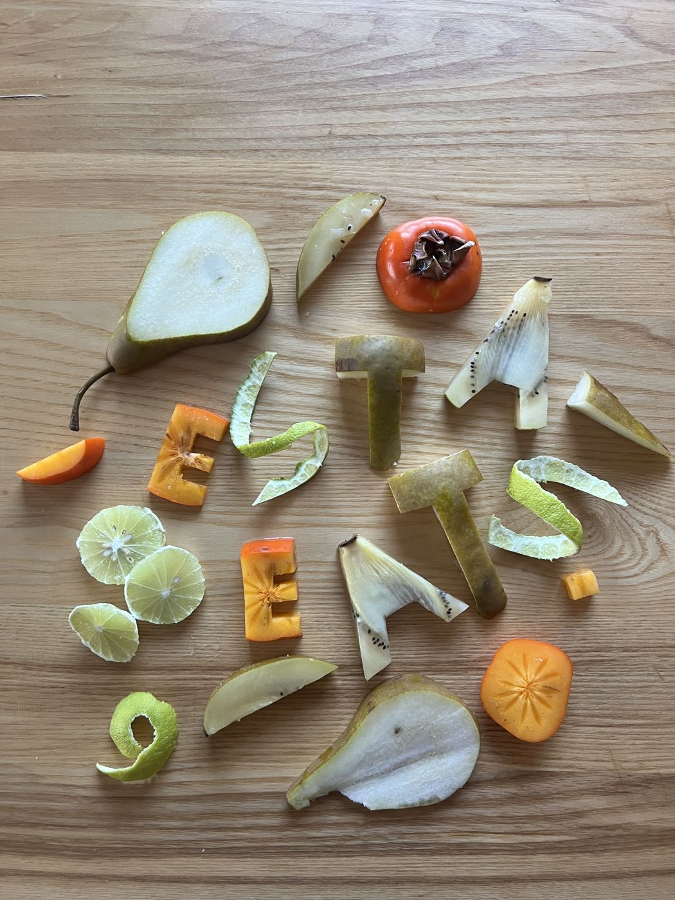
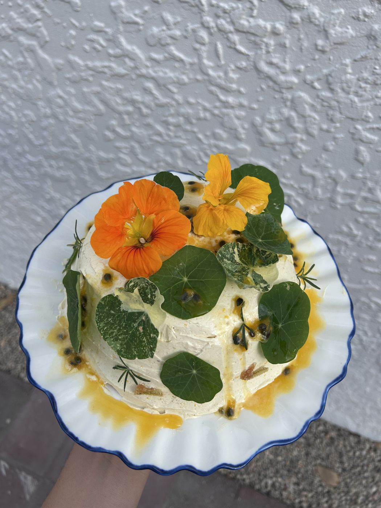

Food Communications
As a recipient of the NZ Food Communicators Scholarship Esta love's to create opportunities to share her love for food. Here is a few of them.
Greater Baker's is a monthly event held by Esta in her university hall. It brings together students eager to learn how to bake or willing to share some skills. We get together to bake a recipe and donate the goods to a charity's Kai and Connect program. The event brings together people at every stage connected to through the roots of food. This is why Esta get's immense joy from food, it brings together her other love, people. Esta would love to grow this concept beyond her hall in the future.
After making the transition moving out of home Esta realised that many University students didn't know how to have fun whilst cooking. Esta set out to change that. She creates illustrative recipe(ish)'s for the Craccum University magazine. The recipes encourage readers to swap in whatever ingredients they have on hand and relish in experimenting in the kitchen. In the future Esta would love to explore this format further and collate the recipes she has been creating.
Esta also experiments on her Instagram @estaeats. She sets herself the yearly challenge of cooking an entire cookbook a year, that's & more food moments are shared.
Good food is better shared.





